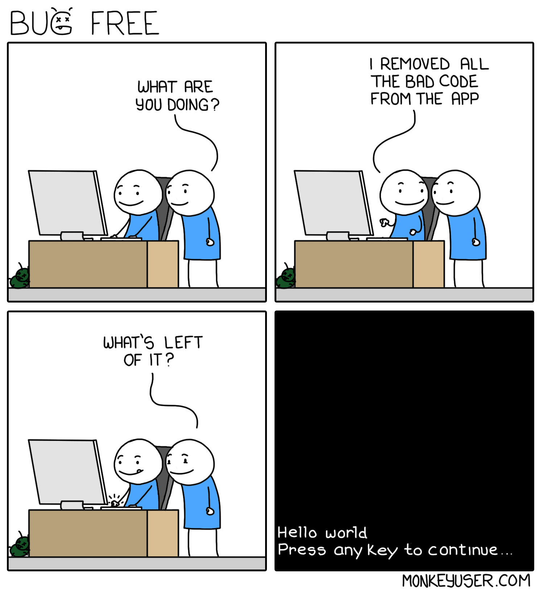
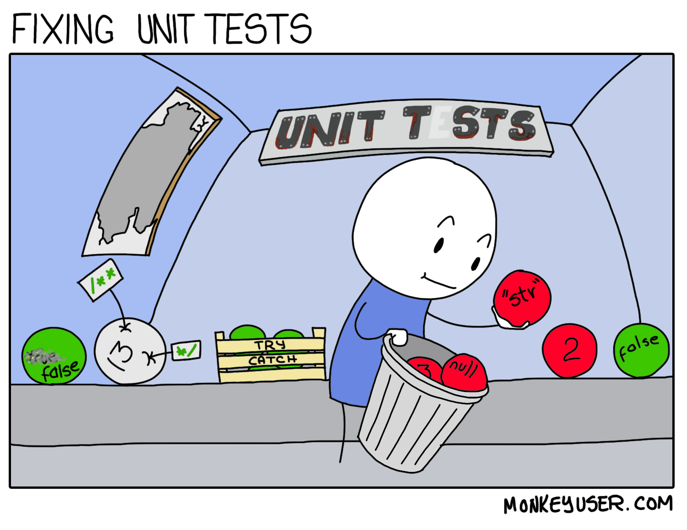

Criando sua primeira APP para Smart TVs (Parte 2)
Tempo médio de leitura: 11 minutos.
/arc-anglerfish-arc2-prod-bonnier.s3.amazonaws.com/public/7SFVUBKE3F5G4N74QM7QJSGU4E.jpg){kind=link}
Iai meu Polvo 🐙 como cês tão?
Dando continuidade a nossa série da criação de uma app para Smart Tvs, hoje nós iremos finalizar os testes e corrigir os bugs deixados no ultimo post.
Bug hunter:

Enquanto eu navegava pela app, notei uma falha na parte da navegação, nós estamos exibindo apenas items relacionados a "TV" mas não estamos filtrando-os. Então ao chegar no final da lista, a navegação "continua" mesmo sem ter item para navegar. E para corrigir vamos modificar o código com:
1 2 3 4 5 6 7 8 9 10 11 12 13 14 15 16 17 18 19 20 21 22 23 24 25 26 27 28 29 30 31 32 33 34 35 | |
Hora dos testes:

Como eu apenas adicionei a suite de test, e não realizei nenhum teste, está na hora de aumentar o nosso coverage! 😄 Para simplificar o post, eu vou deixar o link do arquivo completo do teste para vocês verem. Mas vou destacar o seguintes pontos:
Coverage
Agora já estamos com 95% do componente testado 🤩
babel
Foi necessário adicionar @babel/plugin-transform-runtime e com isso alterar o .babelrc para:
1 2 3 4 5 6 7 8 9 10 11 12 13 | |
package
Precisamos instalar o nock (yarn add -D nock), e atualizar o nosso package.json (de uma olhada no arquivo, pois houveram modificações nas versões dos pacotes).
Arquivo de mock
Para poder testar sem ter que ficar batendo na api toda hora, eu criei uma pasta __mock__ e adicionei um arquivo de mock lá.
jest config
Por causa do mock que precisamos fazer, temos que remover a pasta do mock do coverage:
1 2 3 4 5 | |
Melhorando a experiência:
Agora que nós possuímos uma tela funcionando, precisamos melhorar minimamente a experiência da mesma. E para isso, temos que corrigir a navegação vertical, visto que ao navegar para baixo, o scroll não segue o foco.
Vamos atualizar o css, adicionando altura para as imagens e depois dando um tapa no visual.
1 2 3 4 5 6 7 8 9 10 11 12 13 14 15 16 17 18 19 20 21 22 23 24 25 26 27 28 29 30 31 32 33 34 35 36 37 38 39 40 41 42 43 44 45 46 47 | |
Agora vamos adicionar o efeito de scroll e para isso, precisamos de uma div envolvendo todo o conteúdo além de adicionar margin à ela automaticamente utilizando o state.
1 2 3 4 5 6 7 8 9 10 11 12 13 14 15 16 17 18 19 20 21 22 23 | |
Agora, para criarmos a animação, vamos adicionar o valor da altura dos itens (390px) ao margin-top da div wrapper. Então toda vez que apertarmos o botão para baixo vamos subtrair esse valor e para cima vamos adicionar esse valor.
1 2 3 4 5 6 7 8 9 10 11 12 13 14 15 16 17 | |
e no onkeyDown eu chamo o animate:
1 2 3 4 | |
É isso aí!

Nossa app funcionando
Ainda temos muita coisa para fazer porém, já temos o suficiente para testar na TV. No nosso próximo post, desta série, eu ire mostrar como testar essa app numa Smart TV da LG.
Lembrando que eu estou fazendo o mais básico de uma aplicação, para poder demonstrar como é funcionamento de uma app (web hosted) de smart tv. Coisas como organização do projeto, layout e player não estão sendo desenvolvidos, talvez em post futuros eu melhore a nossa app, mas você é livre para modificar a app da melhor forma que você achar 😉.
Links uteis:
Antes de finalizar eu gostaria de recomendar que vocês deem uma olhada nos links do blog do meu amigo Kevin Maduro (kcsmad) que, alem de mostrar outro(s) (bons) ponto(s) de vista, complementam bem os posts sobre smart tv que eu estou fazendo.
É isso, não se esqueçam de comentar e compartilhar e até o nosso próximo post!
Este post é a parte 2 da serie "Criando sua primeira APP para Smart TVs"
- PARTE 1: Criando sua primeira APP para Smart TVs
- PARTE 2: Criando sua primeira APP para Smart TVs (Parte 2)